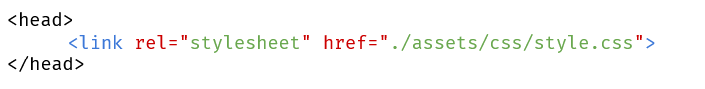

Aufgabenstellung
In dieser Aufgabe üben wir "External Style Sheets". Die Anweisungen zum Darstellen der Seite sind in einer einzigen Datei gespeichert, was es wirklich einfach macht, das Styling über eine ganze Website oder mehrere Elemente hinweg zu bearbeiten. Hier ist eine einfache HTML-Seite mit External Style Sheet:
Bitte wende das bereits Gelernte an, um eine Website wie in der Vorlage (auf der kommenden Folie und als weitere Datei!) zu erstellen. Die Farben darfst du frei wählen.
Wichtig ist, dass du dir Unbekanntes selbst aneignest, verwende dafür:
- HTML CSS - W3Schools
- https://unsplash.it/pixelHeight/pixelWidth